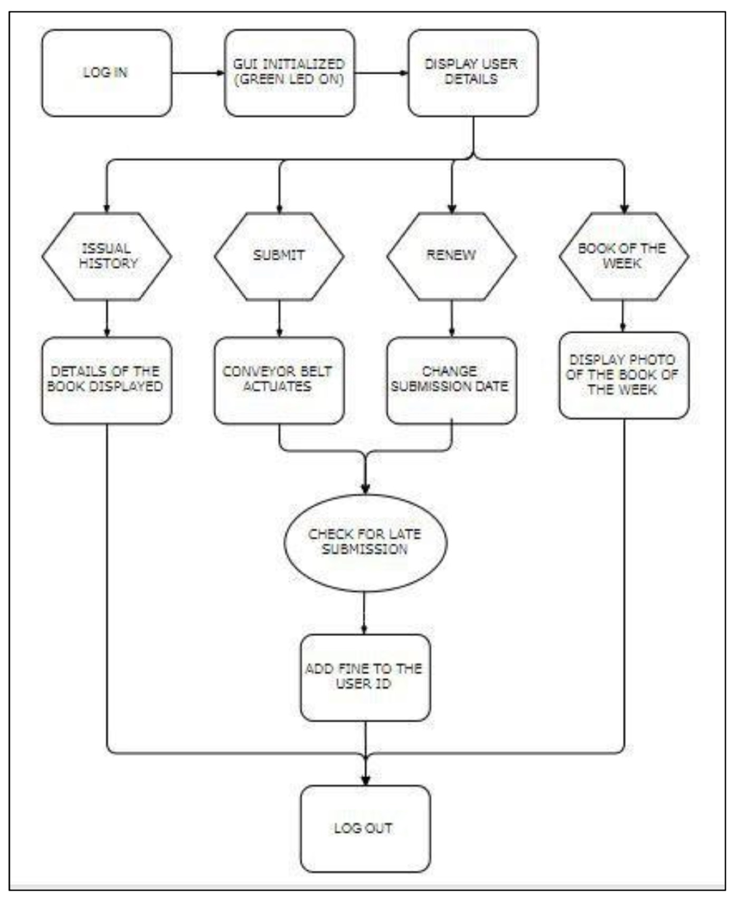
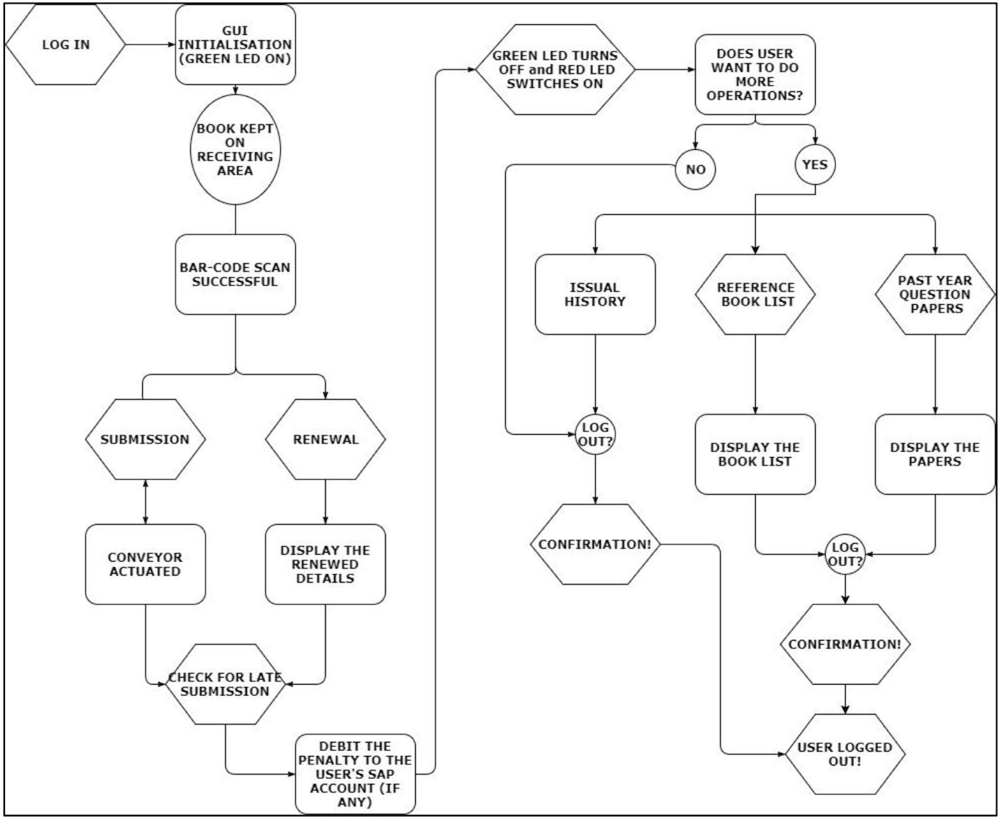
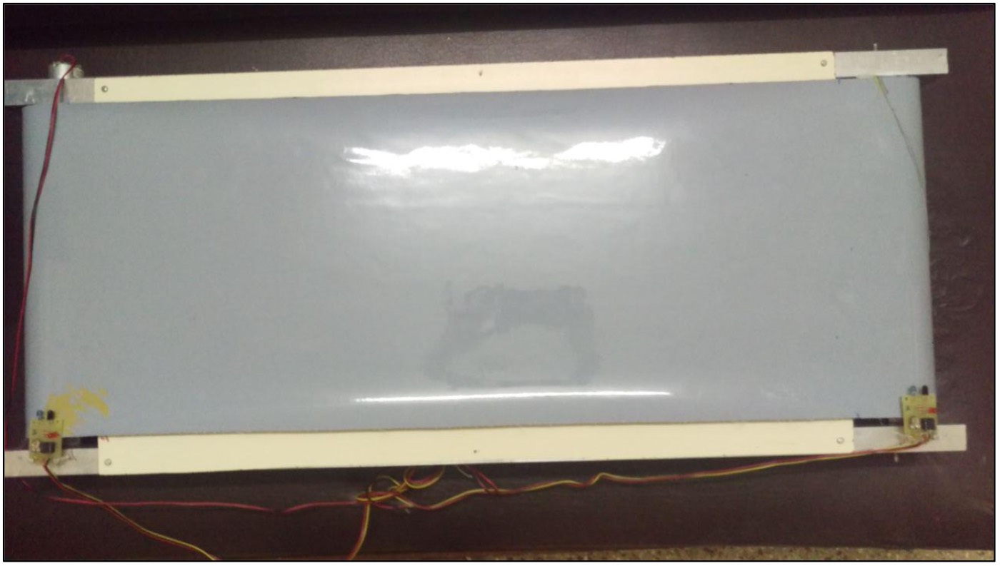
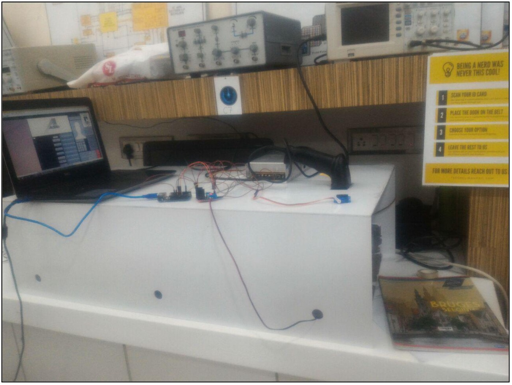
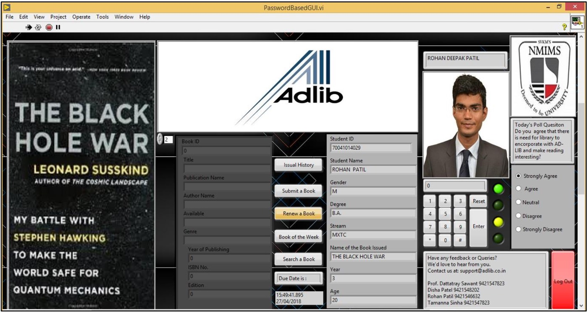

Course Project | Final Year Engineering Project
AD-LIB Automated Library Management System
See project documentsOverview
AD-LIB was a mechatronics and automation final year project focused on improving operational efficiency in library systems through automation.
The project aimed to reduce manual workload involved in book submission and renewal by designing a self-service automated library portal integrating:
- barcode scanning
- conveyor automation
- database management
- GUI-based workflows
- microcontroller systems
The system combined hardware, software, and workflow design into a unified automation experience intended to improve speed, reduce human error, and modernize library operations.
The Challenge
Traditional library workflows relied heavily on manual processes for:
- book renewal
- book returns
- transaction logging
- database updates
- queue management
This created several operational challenges:
- long wait times during peak periods
- repetitive manual work for librarians
- higher risk of human error
- inefficient transaction tracking
- accessibility limitations for users
- scalability issues during high-volume periods
The objective was to design a low-cost automated workflow capable of reducing operational friction while remaining practical for educational institutions.
My Role
As part of the AD-LIB development team, I contributed to system planning, workflow design, GUI development, hardware integration, and automation testing.
Key Responsibilities
- Contributed to automation workflow and system architecture planning
- Supported GUI design and user interaction flows
- Assisted with hardware-software integration
- Worked on database and barcode workflow concepts
- Participated in testing and troubleshooting activities
- Helped document process logic, system behavior, and future scalability opportunities
Project Approach
01 Process & Workflow Design
The project began by analyzing pain points in traditional library operations and mapping opportunities for automation.
The proposed system allowed users to:
- log into a portal
- scan books using barcode technology
- renew or submit books
- access transaction history
- interact with a GUI-driven workflow
- automatically update backend databases
The focus was reducing dependency on manual intervention while improving operational efficiency and user experience.
Overall Concept of AD-LIB

GUI Algorithm Flowchart

02 Hardware & Automation Integration
The system integrated multiple hardware components into a single automated workflow, including:
- conveyor systems
- infrared sensors
- barcode scanners
- microcontrollers
- motor drivers
- Arduino-based actuation systems
A conveyor mechanism automated physical book movement after successful submission, while sensors and controllers coordinated system responses in real time.
The project required balancing:
- hardware reliability
- cost constraints
- system responsiveness
- user interaction simplicity
- integration between physical and digital systems
Completely Assembled Conveyor Belt

Testing AD-LIB

03 GUI & User Experience Development
The project initially explored MATLAB GUIDE before transitioning to LabVIEW to create a more flexible and maintainable GUI environment.
The GUI acted as the centralized control system for:
- barcode transactions
- user authentication
- database communication
- conveyor activation
- transaction tracking
The interface was designed to:
- simplify user interaction
- reduce operational complexity
- support faster transactions
- provide clearer system feedback
The transition from MATLAB to LabVIEW also strengthened system maintainability and hardware interfacing capabilities.
Initialized GUI Screen in LabVIEW Environment

04 Testing, Iteration & System Optimization
The project involved iterative testing across both software and hardware systems.
Key testing areas included:
- conveyor reliability
- sensor accuracy
- barcode scanning responsiveness
- GUI behavior
- database updates
- hardware synchronization
The team identified and resolved issues such as:
- inconsistent sensor ranges
- conveyor stopping behavior
- barcode scanning reliability
- motor actuation adjustments
This phase emphasized practical troubleshooting, iterative improvement, and systems integration under real operational conditions.
Outcomes
- Designed a prototype automated library workflow system
- Reduced dependency on manual library operations
- Integrated hardware automation with GUI-driven workflows
- Built centralized transaction and database management logic
- Created a scalable automation concept for educational institutions
- Demonstrated real-world integration of software, electronics, and operational workflows
What This Project Strengthened
This project strengthened my ability to:
- Think through operational workflows end-to-end
- Coordinate hardware and software integration efforts
- Translate process inefficiencies into automation opportunities
- Design systems with both usability and scalability in mind
- Troubleshoot complex multi-component systems
- Balance technical functionality with user experience considerations
Core Skills Demonstrated
Systems Thinking · Automation Design · Workflow Engineering · Hardware-Software Integration · Process Optimization · GUI Development · Operational Analysis · Mechatronics · Technical Problem Solving · Prototype Development · Cross-Functional System Design
Based on the uploaded AD-LIB project report.